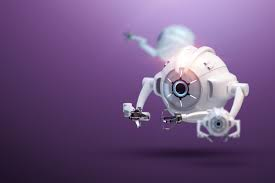

Introducción
Los nanorobots son dispositivos microscópicos que tienen el potencial de revolucionar la medicina moderna. Estos robots, que pueden ser tan pequeños como una millonésima parte de un milímetro, están diseñados para realizar tareas específicas dentro del cuerpo humano. Gracias a su tamaño diminuto, pueden navegar a través de los vasos sanguíneos y dirigirse a áreas afectadas por enfermedades.
Los nanorobots están en la intersección de la nanotecnología y la biomedicina, lo que significa que su desarrollo no solo implica ingeniería, sino también un profundo entendimiento de la biología humana. Con el avance de la tecnología, se espera que estos dispositivos jueguen un papel crucial en la detección temprana de enfermedades y en la administración precisa de medicamentos.

Beneficios
1. Targeting Específico
Los nanorobots pueden dirigirse específicamente a células enfermas, como las células cancerosas, aumentando la efectividad del tratamiento y reduciendo el daño a las células sanas.
2. Administración Controlada de Medicamentos
La precisión en la entrega de medicamentos maximiza la efectividad y minimiza la exposición de otras áreas a sustancias químicas que podrían causar efectos secundarios indeseados.
3. Minimización de Efectos Secundarios
Al actuar directamente sobre las células enfermas, los nanorobots pueden minimizar los efectos secundarios asociados con los tratamientos convencionales.
4. Cirugías Menos Invasivas
Facilitan procedimientos menos invasivos, lo que significa menos tiempo de recuperación para los pacientes y un menor riesgo de complicaciones postoperatorias.

Investigación Actual
Numerosos laboratorios y universidades están investigando el uso de nanorobots para tratar diversas enfermedades. Ejemplos destacados incluyen:
- Investigación en Cáncer: Nanorobots que identifican y destruyen células cancerosas de manera selectiva.
- Diabetes: Uso de nanorobots para regular los niveles de insulina en el cuerpo.
- Enfermedades Neurodegenerativas: Estudio de la regeneración neuronal a través de nanorobots.

Futuro de los Nanorobots
La investigación sobre nanorobots está en constante evolución. Con avances tecnológicos, podemos esperar aplicaciones innovadoras que transformen la medicina moderna.
En el futuro, los nanorobots podrían administrar medicamentos, realizar diagnósticos en tiempo real y reparar tejidos dañados, mejorando significativamente la calidad de vida de los pacientes.
